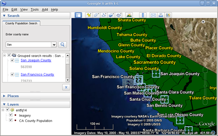

You can specify one or more fields in your source data on which users can search by configuring layer properties. This lesson guides you through the process of specifying one field on one layer as searchable, using the vector project you created in the Configuring Display Rules for Polygon Data chapter. If you have not yet completed that chapter, complete at least the first two sections, Define and Build a Vector Resource Using Polygon Data and Define, Configure, and Build a Vector Project, before continuing with this lesson.
The Asset Manager appears.
/ASSET_ROOT/Projects/Vector folder.
The Layer Properties dialog appears.

When you specify one or more search fields on this tab, a search tab appears in Google Earth EC that allows users to search for data in the selected field(s).


These selections allow users to search on the COUNTY field and display the county name in the description balloon.

These selections result in the county population being displayed in the description balloon for each county that matches the user’s search criteria. The first field selected for display becomes the placemark name. The second field selected for display becomes the snippet. Any additional fields selected for display become the description.
Note: This is currently an exact search, which means that the Google Earth EC user must enter the value exactly as it appears in the database. It is also a wildcard search, so users can enter part of the text they want to match. For example, if a user enters “dakota” in a state search, it matches “North Dakota” and “South Dakota”.
Your selections appear on the list of search fields on the Search tab in the order in which you added them.

The order in which the fields appear on this list dictates the order in which they appear in the description balloon in Google Earth EC.
Note: Since you cannot change the order of the fields after you add them, be sure to add them in the order in which you want them to appear in the description balloon in Google Earth EC.
The Search Tab Properties fields appear at the bottom of the Vector Project Editor.
/ASSET_ROOT/Databases folder. The County Population Search tab appears in the Search Tabs area.
Caution: If you have logged in to this server with Google Earth EC previously, log out, clear your cache, and log back in. For help with clearing your cache, refer to the Google Earth User Guide.
Google Earth EC displays your database with the search tab you specified. When you enter a search string, such as “San”, all of the counties containing that string appear in the search results, and POI icons indicate the location of each of the search results on the map.
